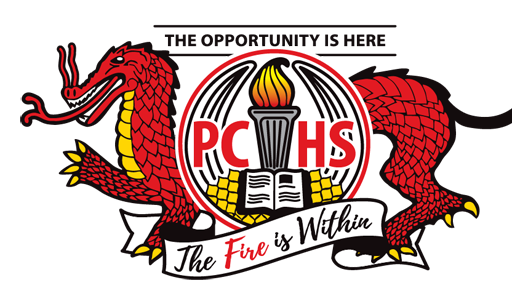

Education
Currently, I am enrolled at Illinois State University as a Creative Technologies - Game Design major. I'm looking to further my game design skills and eventually enter the game development industry by obtaining a bachelor's degree in Game Design.
Illinois State University

Major: Creative Technologies - Game Design
Duration: August 2022 - Present
I will graduate from Illinois State University in 2026.
Pekin Community High School
GPA: 4.24
Duration: August 2018 - May 2022
While at Pekin Community High School, I participated in a few extra-cirricular activities and spent some time volunteering:
- Worked as part of Dragon Tech Support my senior year, volunteering by helping students with technical issues with their Chromebooks. All students receive Chromebooks from the school.
- Worked as a librarian's assistant during my sophomore year, volunteering by helping out around the school library.
- Was part of the school's CyberPatriot team my sophomore year. Worked with the team to compete in competitions meant to test technical skills in a variety of sectors using desktop computers.